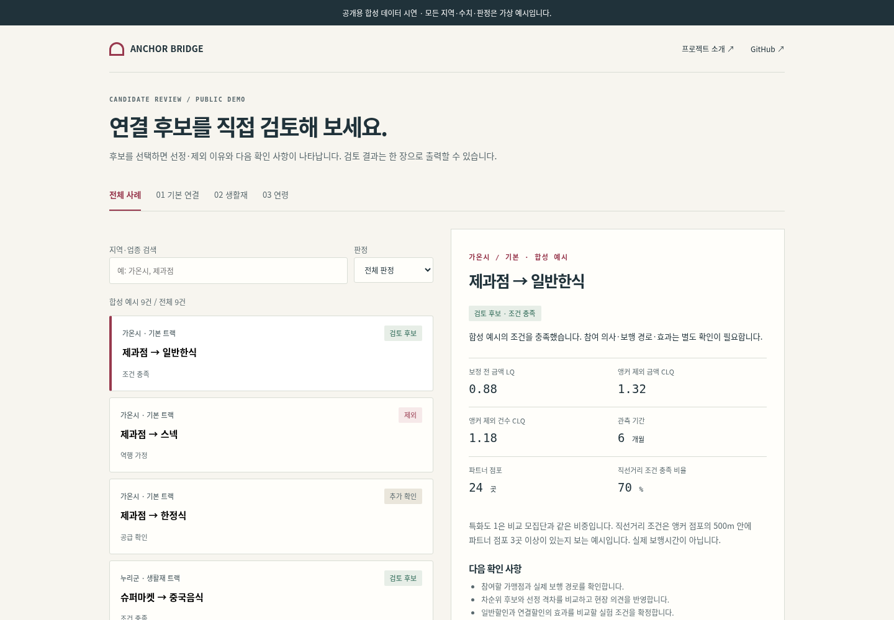

어디가 강한가
전체 규모와 소비구성을 함께 봅니다. 대표 업종에 가려진 수요, 생활재 소비, 연령별 차이를 구분합니다.
Local commerce × decision design
지역의 대표 업종에서 시작해
다음 소비를 연결할 후보를 고릅니다.
선정 이유와 제외 이유를 함께 남깁니다.
앵커 브릿지 · 협심대
BC카드 소비데이터 활용 공모전 제안의 공개 포트폴리오
소비의 출발 업종
앵커를 제외해 소비기반을 확인하고, 점포·거리 조건을 살핍니다. 실제 효과는 실험에서 확인합니다.
버튼을 눌러 판단의 차이를 살펴보세요.
예시의 수치와 판정은 실제 분석 결과가 아닙니다.
01 / The decision
상권 담당자에게 필요한 것은 순위 다음의 판단입니다. 어디를 지원하고, 무엇을 묶고, 계속할지 멈출지를 정할 수 있도록 분석과 실행을 연결했습니다.
전체 규모와 소비구성을 함께 봅니다. 대표 업종에 가려진 수요, 생활재 소비, 연령별 차이를 구분합니다.
후보의 소비기반·관측·점포·거리를 순서대로 확인합니다. 근거가 부족하면 제외하거나 추가 확인으로 남깁니다.
일반할인과 연결할인을 비교합니다. 한 업종의 매출뿐 아니라 지역 전체의 후속 결제를 확인하도록 설계했습니다.
02 / Three perspectives
제출본의 기본 연결·생활재 예외·연령 보정 세 관점을 유지했습니다. 아래 사례는 방법을 설명하기 위해 새로 만든 가상 지역과 합성 수치입니다.
03 / From analysis to a work product
결과를 설명하는 화면과 담당자가 가져갈 문서를 함께 만들었습니다. 한 후보를 고르면 근거·보류 사유·현장 확인 과제가 한 장의 검토서로 이어집니다.

HTML 하나로 오프라인 실행 · 설치·로그인 불필요
혜택 발행과 실제 효과측정은 후속 개발 범위입니다.
04 / Read the work
제출용 문서의 설명 흐름과 편집을 공개용으로 다시 구성했습니다. 원본 4쪽 요약서와 81쪽 보고서의 실제 수치·원장은 싣지 않았습니다.
공개용 재편집본입니다. 사례의 지명·수치는 합성이며 실제 지역의 성과를 나타내지 않습니다. 원본 제출물은 별도 보존합니다.
05 / What still needs proof
조건을 통과했다고 소비가 늘어난 것은 아닙니다. 연결할인을 할 이유가 있는지 확인하려면 ‘아무것도 하지 않은 경우’에 더해 ‘일반할인을 한 경우’와도 비교해야 합니다.
연결 업종에 쓴 돈이 늘었나?
지역 전체의 후속 소비도 늘었나?
주요 비교: C−B. 할인액·사용기간·메시지 조건을 맞추고, 배정 후 72시간 지역 전체 후속 BC 결제액을 비교하는 계획입니다. 최초 앵커 거래는 제외합니다. 실제 실험은 수행하지 않았습니다.
06 / Inspect & reproduce
공개 코드는 LQ·CLQ, 연령구성 재가중, 합성 예시의 후보 판정을 실행합니다. 문서와 데모를 같은 예시에서 만들고 검토할 수 있도록 구성했습니다.
소비구조 분석·후보 선정 규칙, 지역별 근거 원장, 단일 HTML 시제품, 검토서 출력, 제출 PDF를 만들었습니다. 공개본에서는 방법과 화면을 합성 예제로 설명합니다.
개인 교차구매·실제 보행 동선·가맹점 참여·할인 효과는 확인하지 않았습니다. 지자체 도입과 BC 서비스 연동도 제안 단계입니다.
공모전 제공 데이터의 재배포 제한에 따라 원자료·실제 파생 원장·원본 제출 PDF는 공개하지 않습니다. 공개 PDF와 데모의 가상 수치는 실제 자료에서 복사하거나 변형하지 않았습니다.